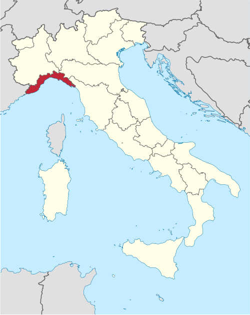
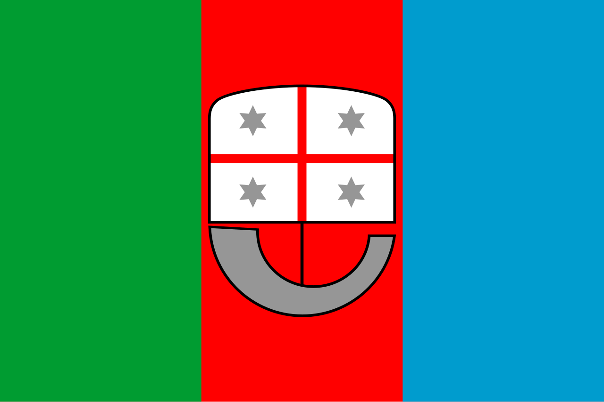
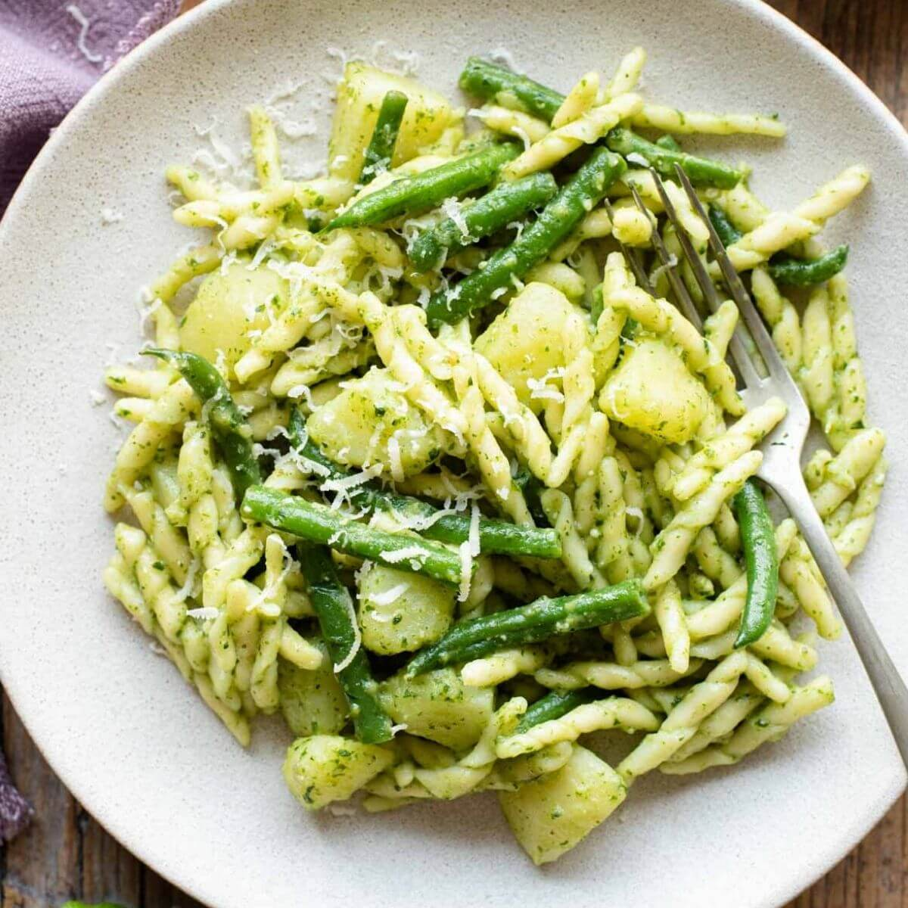
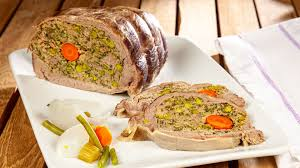
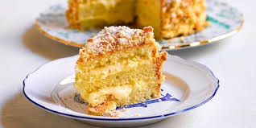
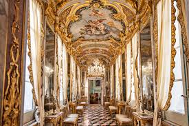

Rugged coastline, mountains, cliffs, and colorful seaside villages
🗣️ Languages
Italian and Ligurian dialects
🍝 Food
Pesto Genovese and Cima Alla Genovese
⭐ Known For
Cinque Terre, maritime history, and the Italian Riviera
Geography

Location of Liguria within Italy.
Liguria is located in Italia Settentrionale (Northern Italy) and is the third-smallest region
in Italy. It is located in the Northwestern part between France and Toscana (Tuscany).
The region consists of 4 provinces: Genoa, Imperia, La Spezia, and Savona
Capital (and largest city): Genoa
Climate
In Liguria, it is generally a mild climate. Winters are usually around 11°C (52°F) during the way,
while summers are usually 28°C (82°F). The dryest month is July with only 4 days of rain, while
the wettest month is May with 10 days of rain.
Topography
Shaped like a crescent, Liguria stretches from the Roia River to the Magra River, is dominated by the Alps
and Apennines, and features a narrow Mediterranean coast (the Italian Riviera) where most of the population
lives and tourism is concentrated due to its scenic beauty and mild climate.
Industry
Liguria’s mild, sheltered climate supports agriculture such as early vegetables, flowers, olives, and wine
grapes, while industry is concentrated around Genoa, Savona, and La Spezia. Genoa and La Spezia are major
shipbuilding and naval centers, Savona is key for iron, and Liguria became part of Italy’s “industrial
triangle” (with Milan and Turin) while also developing a strong tourism industry.
Origins
Origin of the Name
The region is named after the Ligurians, who lived in the region before the Romans and historically occupied
parts of Italy, Corsica, Provence, and even Catalonia around 2000 BC.
Early History
Genora was inhabited since the 5th-4th millennium BC, trading with Etruscans and Greeks.
Roman Period
The Ligurian tribes resisted Rome, but they were conquered in the 1st century BCE, becoming Regio IX of
Augustus’ Italy. The roads built by the Romans, the consular roads, between the 2nd and the 1st century BC,
contributed to the Romanization of the territory
Medieval Genoa
After brief Lombard and Frankish rule, Genoa rose as a leading maritime power by the 11th century,
controlling Liguria by 1400 and rivaling Pisa and Venice.
Genoese Empire
From from the 12th century, it also expanded inland both to eliminate maritime competitors and to procure
wood from the Apennine forests for its shipyards. naval as well as control over the northern crossings.
Despite the importance and immensity of the Genoese empire, from the twelfth to the fifteenth century, the
political life of the city was always the scene of clashes between rich and powerful families. The city kept
its independence until 1796.
17th-18th centuries
Genoa faced conflicts with Savoy, France, and during the Austrian succession, leading to Napoleonic conquest
and creation of the Ligurian Democratic Republic (1805).
Post-Napoleon
After the Congress of Vienna (1815), Genoa passed to the Savoy and later the Kingdom of Sardinia.
Risorgimento (Unification of Italy)
Liguria contributed to Italian unification, including the Expedition of the Thousand and figures like
Mazzini, Mameli, and Garibaldi.
Population and Major Cities
Population
As of 2026, the population of Liguria is 1.5 million people.
In addition, the region covers an area of 5416 km² with a population density of about 278.6 per km².
Major Cities (as of 2026)
1. Genoa
Genoa (Genova) is the capital of Liguria and one of Italy’s most important historic port cities.
Once a powerful maritime republic, Genoa played a major role in Mediterranean trade and exploration,
and it was the birthplace of the famous explorer Christopher Columbus. The city is known for its
historic center, the Palazzi dei Rolli (a UNESCO World Heritage Site), the impressive Old Port, and
its strong maritime traditions.
Population: 566,247 people
2. La Spezia
La Spezia is a coastal city in eastern Liguria known for its important naval history and its role as
a gateway to the famous Cinque Terre. The city’s natural harbor has made it a major maritime center
for centuries, while its surrounding landscapes feature dramatic cliffs, colorful villages, and
beautiful coastal scenery. La Spezia is also home to the Technical Naval Museum, showcasing Italy’s
long connection with the sea.
Population: 92,610 people
3. Savona
Savona is a historic port city on Liguria’s western coast with a rich maritime and cultural
heritage. Once an important rival of Genoa, the city is known for its medieval fortress, the
Fortezza del Priamar, and its charming historic streets. Savona also has connections to the Della
Rovere family, including Pope Sixtus IV and Pope Julius II, who influenced the city’s development
during the Renaissance.
Population: 58,421 people
4. Sanremo
Sanremo is a famous seaside resort on the Italian Riviera, known for its mild climate, elegant
architecture, and vibrant cultural scene. Often called the “City of Flowers” because of its thriving
flower industry, Sanremo hosts the internationally famous Sanremo Music Festival, one of Italy’s
most important music competitions. The city is also known for its beautiful coastline, historic
casino, and Mediterranean atmosphere.
Cinque Terre, meaning "Five Lands," is a rugged coastal area in Liguria, northwest Italy, famous
for 5 ancient, colorful fishing villages perched on the Italian Riviera cliffs. As a UNESCO World
Heritage Site and national park, it is renowned for its dramatic scenery, steep vineyards,
hiking trails, and car-free charm, offering a, "slow travel" experience.
A typical, romantic seaside village characterized by highly-stacked and vivaciously-painted houses,
Camogli is part of a magnificent natural setting that has enchanted tourists the world over, for
centuries. It is the calling for those wanting to enjoy a mix of relaxation, culture, seaside fun
and great food.
Flag

The flag of Liguria is a vertical tricolour of green, red, and sea-blue, featuring the region's coat of arms
centered in the middle.
Adoption
The current flag was adopted on 7 July 1997.
Symbolism
Colour
Each colour has the following meaning:
Green: Represents the Ligurian Alps and the Ligurian Apennines
Red: Represents the blood shed for Italian unification
Blue: Represents the Ligurian Sea
Coat of Arms
Carvel (boat-shape object): Symbolizes the maritime traditions of the region and its great
navigators.
Flag: Represents the current flag of Genoa
Four six-sided stars: Represent the four provinces of Liguria (Genoa, Imperia, La Spezia,
Savona)
Languages
Ligurian
Ligurian is a Romance language spoken mainly in Liguria, parts of northern Italy, Monaco (as Monegasque),
France, Sardinia, and Argentina, with about 450,000 speakers.
Traditionally called Genoese, it has many regional variants. Genoese is the best known due to its literary
tradition and use in Genoa.
Considered a minority language by Europe, Ligurian is not officially recognized in Italy and is at risk of
disappearing, especially among younger generations.
Migration and the dominance of Italian have accelerated its decline as a daily language.
Food
Ligurian cuisine combines fresh seafood with locally grown herbs, vegetables, and olive oil. The region is famous for
ingredients such as basil, used in the iconic pesto Genovese, as well as artichokes, olives, and onions. Traditional
savory pies filled with greens, cheeses, milk curds, and eggs showcase Liguria’s simple yet flavorful Mediterranean
cooking traditions.
Primo (First Course)

Trofie al Pesto Genovese
Trofie al Pesto Genovese is a classic Ligurian dish featuring twisted trofie pasta tossed with
vibrant basil pesto, diced potatoes, and green beans. This hearty, traditional combination cooks the
pasta and vegetables together, allowing the starches to perfectly bind the rich, nutty sauce.
Secondo (Second Course)

Cima Alla Genovese (Stuffed Veal Breast)
An iconic, rich Ligurian dish consisting of a pocket of veal breast stuffed with a savory mixture of
meat, eggs, cheese, sweetbreads, and herbs. It is sewn shut, gently boiled in a vegetable broth, and
pressed before being sliced and served cold
Dolce (Dessert)

Sacripantina
Invented in 1851 by Genoese pastry chef Giovanni Preti, this festive dome-shaped cake is comprised
of three layers of liqueur-soaked sponge cake separated by two layers of cream filling – often a
standard custard and one flavored with chocolate and hazelnut.
Regional Spotlight
Pesto
Pesto, also known as pesto genovese, is an Italian paste traditionally made with leaves of Genovese
basil, extra virgin olive oil, Parmesan, pecorino sardo, pine nuts, and garlic. It originated in the
Ligurian city of Genoa and is used to dress pasta.
Art and Music
Genoa and Baroque Art

Palazzi dei Rolli
Liguria is known in art for its strong Genoese Baroque style, especially seen in the city of Genoa. While
the Renaissance began mainly in Tuscany, Liguria developed its own artistic identity through wealthy
maritime trade, leading to richly decorated palaces, churches, and dramatic frescoes. The region is
particularly recognized for its ornate architecture and paintings that reflect the power and influence of
Genoa’s merchant and naval history.
Fabrizio De André was an influential Italian singer-songwriter born in Genoa. He is widely regarded as one
of Italy's greatest songwriters, known for his poetic lyrics and storytelling style, often focusing on
social issues, marginalized people, and anti-conformist themes. His music had a major impact on Italian
culture and continues to be highly respected today.
Explore the beauty of Liguria
Want to learn more about Liguria? Watch this video to explore its landscapes,
history, culture, and traditions.